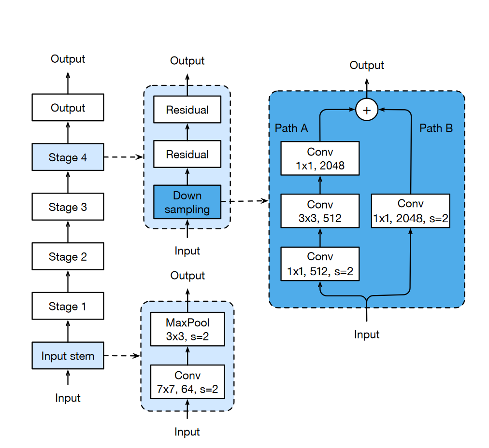
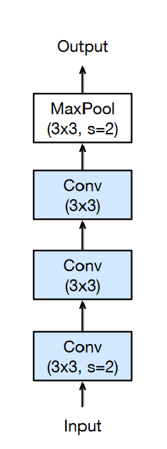
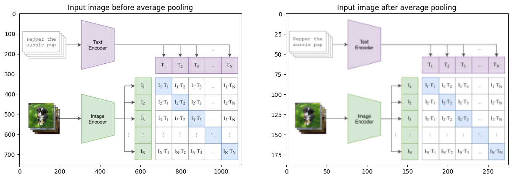

Learning Transferable Visual Models From Natural Language Supervision
This post is part-2 of the two series blog posts on CLIP (for part-1, please refer to my previous blog post). In this blog, we present the PyTorch code behind CLIP for model building and training. This blog post is in itself a working Jupyter Notebook.
All code referenced in this blog post has been copied (and sometimes modified) from the wonderful Open CLIP repository.
Also note that code-folding has been set in this blog post, so you will have to unfold code to have a look at it. :)
In this blog post, we will be covering the following with references to further resources where necessary:
Data download and preparation
CLIP architecture in code
CLIP image encoder
CLIP text encoder
CLIP loss function
From the open clip repository, I found the most complex part to be data preparation. That in itself could be a separate blog post, and therefore, I have only covered it partly here as the main focus is to look at the CLIP architecture. As part of this blog post we are going to assume that there is some magic function that can read the input images and texts and return tensors of shape [N, 3, 224, 224] & [N, 77] respectively, where \(N\) is the batch size.
2 Prerequisites
As part of this blog post, I am going to assume that the reader has a good understanding of the ResNet architecture (K. He et al. (2015)) and Vision Transformer (Dosovitskiy et al. (2020)).
I am also going to assume that the reader also has a good basic understanding of CLIP after having read part-1 of this blog series.
If the reader would like a refresher on the ResNet architecture, please refer to the following video from paper reading group, that I hosted at Weights and Biases.
Also, the authors use Vision Transformer as one of the backbones in Image Encoder. For complete understanding of ViT with PyTorch code implementation, refer to my previous blog post (in collaboration with Dr Habib Bukhari) - Vision Transformer. We won’t be covering ViT architecture as part of this blog post.
For the text encoder, the authors used the GPT-2 architecture. I have previously covered the entirety of the model with PyTorch code implementation at The annotated GPT-2.
Now, with prerequisites and introductions out of the way, let’s get started with the first item which is “Data download and preparation”.
3 Data download using img2dataset and preparation using webdataset
Before we can start training any models, we need data. In this part of the blog post we are looking at data preparation part of CLIP. Remember, that CLIP was trained on 400M (image, text) pairs.
From the paper:
We create a new dataset of 400 million (image, text) pairs and demonstrate that a simplified version of ConVIRT trained from scratch, which we call CLIP, for Contrastive Language-Image Pre-training, is an efficient method of learning from natural language supervision.
So, how does one create these image text pairs in practice? One of the easiest ways to train CLIP using Open CLIP is to generate the dataset in the form of webdataset using img2dataset.
We will only be creating a tiny version consisting of only 1,000 (image, text) and not the complete 400M dataset used in CLIP.
Starting the downloading of this file
Sharding file number 1 of 1 called /home/ubuntu/GIT_REPOS/data/img2dataset/tests/test_files/test_1000.parquet
0it [00:00, ?it/s]
File sharded in 10 shards
Downloading starting now, check your bandwidth speed (with bwm-ng)your cpu (with htop), and your disk usage (with iotop)!
10it [00:31, 3.19s/it]
worker - success: 0.840 - failed to download: 0.150 - failed to resize: 0.010 - images per sec: 12 - count: 100
total - success: 0.840 - failed to download: 0.150 - failed to resize: 0.010 - images per sec: 12 - count: 100
worker - success: 0.850 - failed to download: 0.140 - failed to resize: 0.010 - images per sec: 12 - count: 100
total - success: 0.845 - failed to download: 0.145 - failed to resize: 0.010 - images per sec: 23 - count: 200
worker - success: 0.850 - failed to download: 0.140 - failed to resize: 0.010 - images per sec: 8 - count: 100
total - success: 0.847 - failed to download: 0.143 - failed to resize: 0.010 - images per sec: 23 - count: 300
worker - success: 0.850 - failed to download: 0.150 - failed to resize: 0.000 - images per sec: 9 - count: 100
total - success: 0.848 - failed to download: 0.145 - failed to resize: 0.007 - images per sec: 30 - count: 400
worker - success: 0.840 - failed to download: 0.160 - failed to resize: 0.000 - images per sec: 10 - count: 100
total - success: 0.846 - failed to download: 0.148 - failed to resize: 0.006 - images per sec: 38 - count: 500
worker - success: 0.830 - failed to download: 0.160 - failed to resize: 0.010 - images per sec: 10 - count: 100
total - success: 0.843 - failed to download: 0.150 - failed to resize: 0.007 - images per sec: 31 - count: 600
worker - success: 0.830 - failed to download: 0.150 - failed to resize: 0.020 - images per sec: 9 - count: 100
total - success: 0.841 - failed to download: 0.150 - failed to resize: 0.009 - images per sec: 35 - count: 700
worker - success: 0.880 - failed to download: 0.100 - failed to resize: 0.020 - images per sec: 6 - count: 100
total - success: 0.846 - failed to download: 0.144 - failed to resize: 0.010 - images per sec: 40 - count: 800
worker - success: 0.840 - failed to download: 0.150 - failed to resize: 0.010 - images per sec: 4 - count: 100
total - success: 0.846 - failed to download: 0.144 - failed to resize: 0.010 - images per sec: 34 - count: 900
worker - success: 0.900 - failed to download: 0.100 - failed to resize: 0.000 - images per sec: 4 - count: 100
total - success: 0.851 - failed to download: 0.140 - failed to resize: 0.009 - images per sec: 38 - count: 1000
CPU times: user 71.6 ms, sys: 51 ms, total: 123 ms
Wall time: 32.6 s
So it takes ~35 seconds to create the tiny dataset on my 8 core machine. Please refer to img2dataset for information on other available (image, text) pair datasets.
But, what do the downloads look like? Let’s find out.
Code
import numpy as npfrom pathlib import Pathnp.array(sorted(list(Path('./sample/').glob('*tar'))))
As we can see above, the script from img2dataset downloads {00000...00009).tar files. What’s in these .tar files? Answer lies in the documentation of webdataset. I won’t be covering more details as part of this blog post as we have a lot to cover stil!
TipFurther reading
One key thing that I haven’t covered as part of this blog post, is that how do these .tar files get converted to inputs to the CLIP model? Let me share briefly here and point to the right directions.
First, a data pipeline is created using wds (webdataset) package. You can find the pipeline being created here.
This pipeline takes in a tokenizer that’s HFTokenizer, see here. This HFTokenizer tokenizes the input and returns input_ids of context_length = 77.
4 Training
Now, to train a CLIP model of your choice on a single GPU, simply clone the Open Clip repository and run the following command in your terminal in the src/ directory:
This should kick off training on your machine. Now, that we can train CLIP models on our own machines, let’s look at some of the details of training scrip and the CLIP architecture.
5 CLIP Architecture
Figure 2: Summary of CLIP approach
From Figure 2, we can see that we have a text encoder and image encoder. These encoders are responsible for taking in the image and the text and and converting them to an embedding space.
As mentioned in Section 1, we will assume that there is some magic function that can read the .tar files and return tensors of shape [1, 3, 224, 224] for each image, and [1, 77], for each text.
These inputs then get encoded to embedding space using image and text encoder respectively.
The image encoder encodes images to embeddings \(I_1, I_2, I_2 ... I_N\), and the text encoder encodes respective image captions to \(T_1, T_2, T_3 ... T_N\).
Note
In practice, the embedding size in CLIP is 1024. Therefore is our batch size \(N = 8\), the 8 input images will get encoded to a tensor of shape \((8, 1024)\), and also the 8 input texts will get encoded to a tensor of shape \((8, 1024)\).
Let’s start by looking at the inputs and outputs of the overall CLIP model.
First, we load the config, as part of this blog post we will work with ResNet-50 architecture as an example. So, let’s start by loading the corresponding config.
You might recognize image shape easily - it represents 1 image with 3 channels (RGB) and (H,W) = 224. For text, each text is tokenized to max length 77. The integer numbers represent token_id with max value of cfg['text_cfg']['vocab_size'].
Makes sense so far?
As for the outputs, the model returns three outputs - image_features, text_features and logit_scale.
logit_scale has been covered in more detail in Section 8 of this blog post. For now, think of it as a learnable parameter during model training.
As for image_features & text_features, these are the respective embeddings \(I_1, I_2, I_2 ... I_N\), and the text encoder encodes respective image captions to \(T_1, T_2, T_3 ... T_N\) with reference to Figure 2.
TipTip
Before you proceed further, remember, the encoders are responsible for encoding the input image and text to embeddings of dimension - \(1024\).
Next, let’s look at the respective architectures of Image and Text encoders in more detail.
6 Image Encoder
From the paper:
We consider two different architectures for the image encoder. For the first, we use ResNet-50 (K. He et al. (2015)) as the base architecture for the image encoder due to its widespread adoption and proven performance. We make several modifications to the original version using the ResNetD improvements from T. He et al. (2018) and the antialiased rect-2 blur pooling from Zhang (2019). We also replace the global average pooling layer with an attention pooling mechanism. The attention pooling is implemented as a single layer of “transformer-style” multi-head QKV attention where the query is conditioned on the global average-pooled representation of the image. For the second architecture, we experiment with the recently introduced Vision Transformer (ViT) (Dosovitskiy et al. (2020)). We closely follow their implementation with only the minor modification of adding an additional layer normalization to the combined patch and position embeddings before the transformer and use a slightly different initialization scheme.
6.1 Modified ResNet
Let’s start with the first architecture.
For the first, we use ResNet-50 (K. He et al. (2015)) as the base architecture for the image encoder due to its widespread adoption and proven performance. We make several modifications to the original version using the ResNetD improvements from T. He et al. (2018) and the antialiased rect-2 blur pooling from Zhang (2019). We also replace the global average pooling layer with an attention pooling mechanism. The attention pooling is implemented as a single layer of “transformer-style” multi-head QKV attention where the query is conditioned on the global average-pooled representation of the image.
He, Kaiming, Xiangyu Zhang, Shaoqing Ren, and Jian Sun. 2015. “Deep Residual Learning for Image Recognition.”CoRR abs/1512.03385. http://arxiv.org/abs/1512.03385.
There are 3 major changes as mentioned to the ResNet architecture in CLIP:
There are now 3 “stem” convolutions as opposed to 1, with an average pool instead of a max pool.
Performs anti-aliasing strided convolutions, where an avgpool is prepended to convolutions with stride > 1
The final pooling layer is a QKV attention instead of an average pool
6.1.1 ResNet stem
Let’s look at all of them one by one in code. First, we start with There are now 3 “stem” convolutions as opposed to 1, with an average pool instead of a max pool.

Figure 3: Overview of ResNet architecture
In the vanilla ResNet architecture, the stem consists of a 7x7 stride-2 convolution. This is what the stem looks like in the vanilla ResNet architecture.
class VanillaResNet:def__init__(...):self.stem = nn.Conv2d(in_chans, inplanes, kernel_size=7, stride=2, padding=3, bias=False)
However, in the paper T. He et al. (2018), where at the time, the authors raised ResNet-50’s top-1 validation accuracy from 75.3% to 79.29% on ImageNet. From the paper, one of the tweaks used in the architecture:
A 7 × 7 convolution is 5.4 times more expensive than a 3 × 3 convolution. So this tweak replacing the 7 × 7 convolution in the input stem with three conservative 3 × 3 convolutions.

Figure 4: Overview of ResNet tweak
Warning
On top of replacing \(7x7\) stride-2 convolution with 3 consecutive \(3x3\) convolutions, the authors also replaced max pooling with average pooling, but image above shows max pooling as it has been directly copied from T. He et al. (2018).
He, Tong, Zhi Zhang, Hang Zhang, Zhongyue Zhang, Junyuan Xie, and Mu Li. 2018. “Bag of Tricks for Image Classification with Convolutional Neural Networks.”CoRR abs/1812.01187. http://arxiv.org/abs/1812.01187.
In code this looks like:
class ModifiedResNet:def__init__(...):self.conv1 = nn.Conv2d(3, width //2, kernel_size=3, stride=2, padding=1, bias=False)self.bn1 = nn.BatchNorm2d(width //2)self.act1 = nn.ReLU(inplace=True)self.conv2 = nn.Conv2d(width //2, width //2, kernel_size=3, padding=1, bias=False)self.bn2 = nn.BatchNorm2d(width //2)self.act2 = nn.ReLU(inplace=True)self.conv3 = nn.Conv2d(width //2, width, kernel_size=3, padding=1, bias=False)self.bn3 = nn.BatchNorm2d(width)self.act3 = nn.ReLU(inplace=True)self.avgpool = nn.AvgPool2d(2)def stem(self, x): x =self.act1(self.bn1(self.conv1(x))) x =self.act2(self.bn2(self.conv2(x))) x =self.act3(self.bn3(self.conv3(x))) x =self.avgpool(x)return xdef forward(self, x): x =self.stem(x)
6.1.2 Blur Pool
The next change is to use BlurPooling - Performs anti-aliasing strided convolutions, where an avgpool is prepended to convolutions with stride > 1. This change has been adopted from Zhang (2019).
In this section I will introduce BlurPooling and share how it is implemented in the ModifiedResNet architecture.
From the research paper,
Modern convolutional networks are not shiftinvariant, as small input shifts or translations can cause drastic changes in the output. Commonly used downsampling methods, such as max-pooling, strided-convolution, and averagepooling, ignore the sampling theorem. The wellknown signal processing fix is anti-aliasing by low-pass filtering before downsampling.
Blur Pooling in CLIP has been implemented inside the Bottleneck block as below:
class Bottleneck(nn.Module): expansion =4def__init__(self, inplanes, planes, stride=1):super().__init__()self.stem = create_stem() # stem consists of 3 3x3 convs instead of 1 7x7 stride-2 convself.downsample =Noneself.stride = strideif stride >1or inplanes != planes * Bottleneck.expansion:# downsampling layer is prepended with an avgpool, and the subsequent convolution has stride 1self.downsample = nn.Sequential(OrderedDict([ ("-1", nn.AvgPool2d(stride)), ("0", nn.Conv2d(inplanes, planes *self.expansion, 1, stride=1, bias=False)), ("1", nn.BatchNorm2d(planes *self.expansion)) ]))def forward(self, x: torch.Tensor): identity = x out =self.stem()ifself.downsample isnotNone: identity =self.downsample(x) out += identity out =self.act3(out)return out
Now the blurring occurs in downsample. Previously, as can be seen in Figure 3, this downsample layer would be a stride-2 \(1x1\) convolution.
The blurring occurs in nn.AvgPool2d(stride). How? See example below:
Code
import torch.nn as nn from PIL import Imageimport numpy as np import torchimport matplotlib.pyplot as pltpool = nn.AvgPool2d(kernel_size=2)img = np.array(Image.open('../images/clip.png'))x = torch.tensor(img, dtype=torch.float64).permute(2, 0, 1)out = pool(pool(x))fig, ax = plt.subplots(1, 2, figsize=(15, 8))ax[0].imshow(x.int().permute(1,2,0))ax[0].set_title("Input image before average pooling");ax[1].imshow(out.int().permute(1,2,0))ax[1].set_title("Input image after average pooling");

As can be seen above, passing the input image through a nn.AvgPool2d blurs the image, and therefore, anti-aliases the input as per Zhang (2019). As a result, the resulting model is translation invariant.
This brings us to the final change in ModifiedResnet.
The last change in the network architecture is to use QKV attention instead of an average pool. From the paper:
We also replace the global average pooling layer with an attention pooling mechanism. The attention pooling is implemented as a single layer of “transformer-style” multi-head QKV attention where the query is conditioned on the global average-pooled representation of the image.
As can be seen from the code above, we perform multi head self-attention from Vaswani et al. (2017), on x. One key thing to note above in the forward method is :
x = torch.cat([x.mean(dim=0, keepdim=True), x], dim=0) # (HW+1)NC
This corresponds to “query is conditioned on the global average-pooled representation of the image” from the paper because the final output that is returned is x[0] and x[0] is global average pooled representation of the image.
6.2 Modified ViT
From the paper:
For the second architecture, we experiment with the recently introduced Vision Transformer (ViT) (Dosovitskiy et al. (2020)). We closely follow their implementation with only the minor modification of adding an additional layer normalization to the combined patch and position embeddings before the transformer and use a slightly different initialization scheme.
Dosovitskiy, Alexey, Lucas Beyer, Alexander Kolesnikov, Dirk Weissenborn, Xiaohua Zhai, Thomas Unterthiner, Mostafa Dehghani, et al. 2020. “An Image Is Worth 16x16 Words: Transformers for Image Recognition at Scale.”CoRR abs/2010.11929. https://arxiv.org/abs/2010.11929.
Since the architecture is very similar to vanilla Vision Transformer, with a very minor change of adding LayerNorm after combining Patch embeddings and positional embeddings, I will not be covering the architecture in detail in this blog post.
For reference to ViT, please refer to my previous blog post that covers the architecture in detail with PyTorch code implementation - Vision Transformer
Having covered both Image encoders used in CLIP architecture, it is now time to move on to the text encoder.
7 Text Encoder
In this section, let’s look at the text encoder of CLIP architecture. From the paper:
The text encoder is a Transformer (Vaswani et al. (2017)) with the architecture modifications described in Radford et al. (2019). As a base size we use a 63M-parameter 12layer 512-wide model with 8 attention heads. The transformer operates on a lower-cased byte pair encoding (BPE) representation of the text with a 49,152 vocab size (Sennrich et al., 2015). For computational efficiency, the max sequence length was capped at 76. The text sequence is bracketed with [SOS] and [EOS] tokens and the activations of the highest layer of the transformer at the [EOS] token are treated as the feature representation of the text which is layer normalized and then linearly projected into the multi-modal embedding space. Masked self-attention was used in the text encoder to preserve the ability to initialize with a pre-trained language model or add language modeling as an auxiliary objective, though exploration of this is left as future work.
Vaswani, Ashish, Noam Shazeer, Niki Parmar, Jakob Uszkoreit, Llion Jones, Aidan N. Gomez, Lukasz Kaiser, and Illia Polosukhin. 2017. “Attention Is All You Need.”CoRR abs/1706.03762. http://arxiv.org/abs/1706.03762.
I have previously covered the complete GPT-2 architecture used as text encoder in my previous blog post at The annotated GPT-2 and therefore, won’t be covering it here in this blog post.
8 Contrastive Loss
One thing that I was most interested in when I started to write the CLIP blog post was to look at Contrastive Loss and understand it in PyTorch code.
In this section, that is exactly what we will be doing.
If you remember from Section 6, the images get encoded as image features to shape torch.Size([16, 1024]) and texts get encoded to text features of shape torch.Size([16, 1024]).
Let’s look at the inputs and outputs of ClipLoss before implementing ourselves.
Code
import torchimport torch.nn.functional as Fimport numpy as np import torch.nn as nnfrom open_clip.loss import ClipLoss
One thing you’ll notice is that the ClipLoss expects a parameter called logit_scale. Now, what is this logit_scale parameter?
From the paper:
The learnable temperature parameter \(τ\) was initialized to the equivalent of 0.07 from (Veeling et al. (2018)) and clipped to prevent scaling the logits by more than 100 which we found necessary to prevent training instability.
Veeling, Bastiaan S., Jasper Linmans, Jim Winkens, Taco Cohen, and Max Welling. 2018. “Rotation Equivariant CNNs for Digital Pathology.”https://doi.org/10.48550/ARXIV.1806.03962.
But, rather than being initialised to \(0.07\), this temperature parameter \(τ\) get’s initialized as nn.Parameter(torch.tensor(np.log(1/0.07))). For further explanation, see this issue here.
Now, having looked at the inputs and outputs and also logit_scale, it is time to look at the source code. Remember contrastive loss and what it does from part-1 of the blog post? As a quick revision, let me re-post the image here too.
Figure 5: Cosine similarity between text and image features
Contrastive loss is trying to maximise the cosine similarity on the diagonal and minimise it elsewhere. But, how? In pseudo-code this looked something like:
# symmetric loss function labels = np.arange(n) loss_i = cross_entropy_loss(logits, labels, axis=0) loss_t = cross_entropy_loss(logits, labels, axis=1) loss = (loss_i + loss_t)/2
Once, we have logits, which is the \(8 x 8\) matrix as in Figure 5 above, we calculate Cross Entropy Loss once for axis=0 and once for axis=1, this way, we are trying to match the diagonal to corresponding image and text because the labels are aligned on both the axis.
But, how does this look like in code? Let’s see.
Note
The below implementation of ClipLoss is a minimalistic version of the complete implementation from open clip.
So, how does the above implementation match pseudo-code?
Let’s start with labels. Since the labels are aligned, that is the \(0th\) image on axis=0 corresponds to \(0th\) text on axis=1, therefore, we can just say that labels = torch.arange(num_logits, device=device, dtype=torch.long). In this case the value of labels comes out to be tensor([ 0, 1, 2, 3, 4, 5, 6, 7], device='cuda:0') based on Figure 5. By minimising Cross Entropy loss for these labels once for axis=0 and once for axis=1, we are making sure that cosine-similarity on the diagonal is maximum and lower otherwise.
In code (as opposed to pseudo-code), rather than minimising cross entropy for axis=0, and axis=1, we calculate: